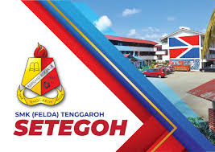

MY EDUCATION
My Secondary School Experience
From the age of 13 to 17, I began my secondary school journey at Sekolah Menengah Kebangsaan (FELDA) Tenggaroh. The school placed my friends and me in a special dormitory. Our dormitory was about 2 km from the school, so we went to school by bus or van.
When I was in form 1, I was trusted with the role of a school supervisor, which taught me responsibility and leadership. I also held the position of disciplinary exco in 2017 until 2018.
Head School Supervisor (2019-2021)When I was in form 3, I was trusted with the role of head school supervisor, which taught me responsibility and leadership. I also held the position for three consecutive years.
Head of Persatuan Puteri Islam Malysia (PPIM) (2020-2021)In 2020, I was appointed as the Head of Persatuan Puteri Islam Malysia (PPIM), where I led, organized and participate in all activities. I also represent the state of Johor in several national activities.
Sports (2017-2021)I am also a school athlete and represented the state in several sporting events such as handball, petanque, javelin throwing, etc. I also won several events.
Hockey Club Secretary (2019-2021)In 2021, I became the Secretary of Hockey Club, taking on more responsibilities in managing the club.
Quran Recitation Competition (2018-2020)I proudly represented the school and state of Johor in Quran Recitation Competition event during these years, showcasing my talents and dedication and won several events.
Participation in the Malay language Carnival (2017-2020)I represented the school and the state in several events such as poetry recitations, poetry readings, rhythmic speaking, pantun competitions, and others.Me and my friends won several events
PT3 Examination Results (2019)In my PT3 exams, I achieved 8A and 2B, demonstrating my academic efforts.
Young Coach Club Secretary (2019-2021)In 2019, I became the Secretary of Young Coach Club, which to organized and led all the programs in the jungle.
Examination ResultsFinally, I sat for my SPM exams and achieved 5A, 1B and 2C, which marked a significant milestone in my education journey.